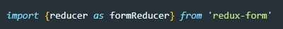
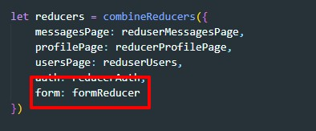
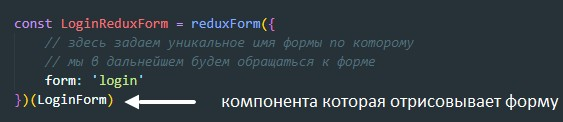
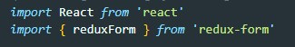
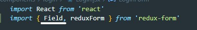
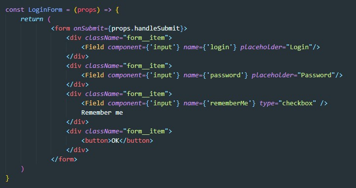
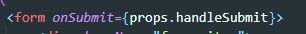
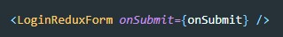
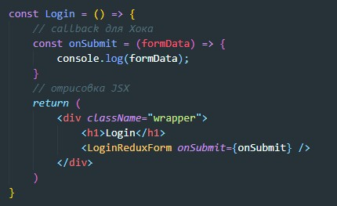

redux-form - это библиотека, которая добавляет в store reducer и flux круговорот с элементами формы уже происходит с этим участком state который был создан reducer библиотеки redux-form
Для инсталяции библиотеки redux-form в терминале вводим команду
npm install redux-form --saveredux-form предоставляет нам специальный хок, который вернет нам контейнерную компоненту, которая в свою очередь и будет общаться с тем участком state который был создан redux-form
Заходим в файл где создается store c помощью redux и импортируем библиотеку redux-form
После чего в combineReducers добавляем новый reducer
ВАЖНО имя ключа задать как form
Теперь нам нужно нашу форму (а вернее компоненту которая отрисовывает нашу форму) обернуть в ХОК - reduxForm.
Перед этим не забываем импортировать ХОК
Хок reduxForm принимает в качестве аргумента объект, который созержит свойство - form где необходимо указать уникальное имя формы. по этому имени redux-form будет обращатся к форме
Для того что бы не создавать обработчики событий для полей input (для flux круговорота) мы вместо input будем использовать Field, перед использованием не забываем импортировать их
Филдам обязательно задаем атрибут name, на значения этих атрибутов будет реагировать redux-form. Так же в атрибуте component указываем тип филда
Хок reduxForm прокидывает кучу callback в нашу компоненту. Среди них есть функция которая называется handleSubmit. Для получения данных полей формы вешаем событие на форму onSubmit и передаем туда через пропсы handleSubmit
redux-form после выполнения submit добавить все данные с элементов формы в объект и этот объект передаст callBack - onSubmit, т.е. нужно у контейнерной компоненты которые вернул нам Хок reduxForm прокинуть через пропсы callback который должен называться onSubmit
Вот как в целом будет выглядить компонента которая отрисовывает контейнерную компоненту компоненты которая отрисовывает форму (УЖАС!!!)
